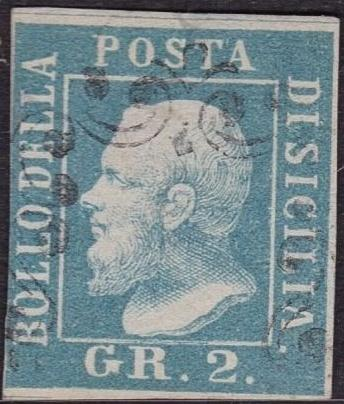
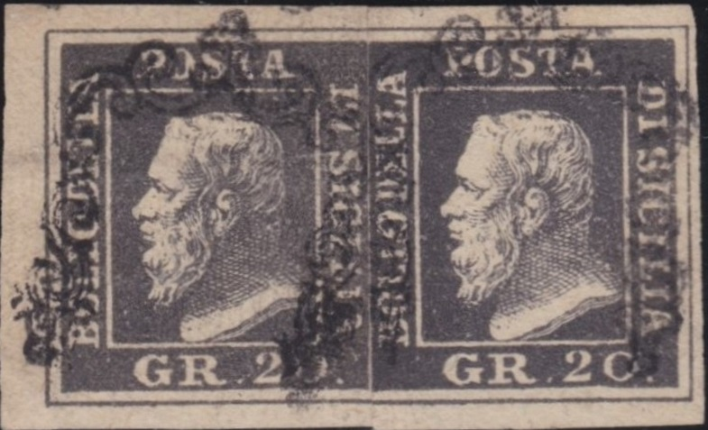
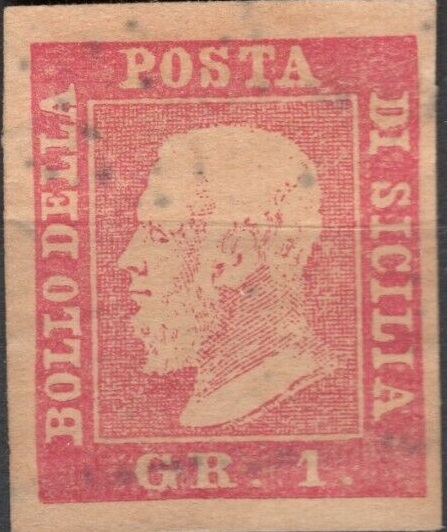
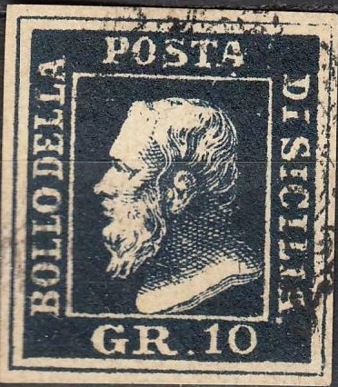
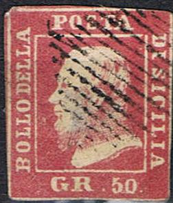
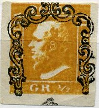
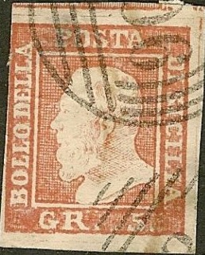
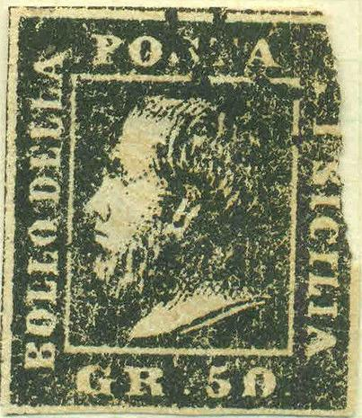
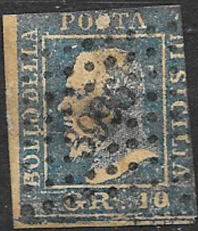

SICILY Forgeries Part 2
Return To Catalogue -
Sicily forgeries, part 1 - Sicily forgeries, part 3 - Sicily - Italy
Note: on my website many of the
pictures can not be seen! They are of course present in the
catalogue;
contact me if you want to purchase the catalogue.
Other forgeries:


Very large dot behind "SICILIA", which is placed too
low and "GR" different, note the strange cancels. Also,
the bottom of the bust of the King is too wavy when compared to a
genuine stamp. In the 5 g the "G" and the "R"
are very far apart.



Oher forgeries
(An engraved forgery of the 50 g)
A very peculiar forgery(?), offered as genuine on Ebay, with
pearls all around it and fleur-de-lis in the four angles. A
similar image can be found in The Stamp Collector's Magazine Vol
IV, 1866, page 120 where it is mentioned as essay.
Another strange forgery 50 g black. The cancel appears to have
been printed with the forgery.
Forgery of the 1/2 g value

Forgery of the 2 g, 5 g, 10 g, 20 g and 50 g made by the same
forger, note the strange "S" in "POSTA".
There is no dot behind "SICILIA" . The "P" of
"POSTA" is very thick and the right hand leg of the
"A" of "POSTA" is also very thick.
Three forgeries, apparently made by the same forger. Note the
very typical shape of the beard.

Some forgeries with very large borders. The cancels are very
pronounced. Are these the same forgeries as the ones shown above?
Forgery of the 2 Gr with the bust at a considerable distance from
the white line below it.
Another rather primitive forgery of the 2 g stamp.
And another forgery of the 2 g value.
A forgery of the 2 g value with the "2" too far to the
right and a strange small circular cancel.
Forgery of the 50 g value. The '50' is very badly done in this
forgery.
Page from a 'Fournier Album of Philatelic Forgeries' with a
forged Sicily 'horseshoe' cancel
A deceptive forgery made from a photograph, the small
photographic dots can still be seen in an enlargement (image
kindly set at my disposal by Benzy Keidar)
Album Weeds lists seven kinds of forgeries.
However, at this moment I don't have pictures of all of these
forgeries.
What is this? A stamp in a similar design
(embossed center), with 'F.RAGIUOLI' written at the bottom
(essay?):
With "R.FAGIUOLI" written at the bottom

Forgery of the 5 g value with "905" cancel and a
"8" cancel. I have seen similar forgeries of Sierra
Leone and St.Christopher with the same cancel. .
Forgery of the 50 gr value.

Very primitive forgeries of the 50 gr value with printed cancel?
Another very primitive forgery with wrong inscription
"PONTA" instead of "POSTA"
Forgery with a strange bottom left part.
Other forgery.

Very badly printed forgery of the 10 g value.
50 g forgery with "GR" very close together and
"B" of "BOLLO" placed too low.
A 'Tobler' facsimile, these images are known to have been cut
out. Similar cards exist for great rarities of other countries
(Swiss cantonal stamps, penny black, first stamps of France,
Belgium etc.). The facsimile is slightly larger (10%) than the
genuine stamp.
Not sure what is this, a rather badly printed 5 g red forgery.
1/2 gr forgery with very neat cancel.
Sicily forgeries, part 3
Stamps - Francobolli - Timbres-Poste -
Briefmarken
Copyright by Evert Klaseboer


{kind=link}
{kind=link}
{kind=link}
{kind=link}
{kind=link}
{kind=link}
{kind=link}
{kind=link}